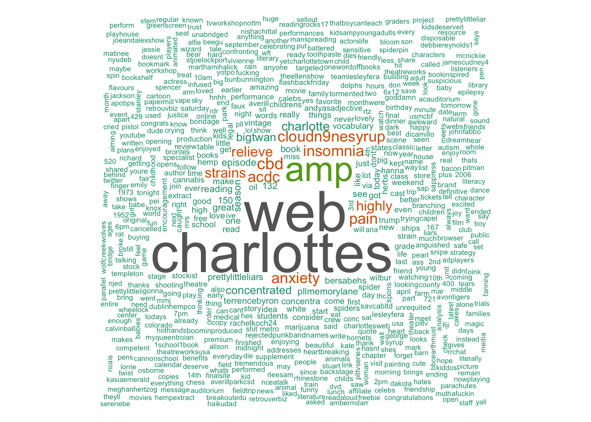

Charlotte’s Web
Author: E.B. White
“Trust me, Wilbur. People are very gullible. They’ll believe anything they see in print.”
― E.B. White, Charlotte’s Web

Summary
Some Pig. Humble. Radiant. These are the words in Charlotte’s Web, high up in Zuckerman’s barn. Charlotte’s spiderweb tells of her feelings for a little pig named Wilbur, who simply wants a friend. They also express the love of a girl named Fern, who saved Wilbur’s life when he was born the runt of his litter.
E. B. White’s Newbery Honor Book is a tender novel of friendship, love, life, and death that will continue to be enjoyed by generations to come. It contains illustrations by Garth Williams, the acclaimed illustrator of E.B. White’s Stuart Little and Laura Ingalls Wilder’s Little House series, among many other books.

## [1] "mzzcalirenee: Charlotte's Web: Untangling One of Colorado's Biggest Cannabis Success Stories https://t.co/5gyoE8n4F0 via @denverwestword"
## [1] "Danielle_Goss: Perfect! We are starting Charlotte's Web l on Monday as a read aloud https://t.co/lc3vupvnje"
## [1] "QuantomBot: RT @Steve_Games: #QuietDownAFilm Hush, Hush Sweet Charlotte's Web #SciFi #Amwriting #Amreading #Games #gamedev #indiedev #comics #NowPlayin…"
## [1] "beaung: RT @nurseslabs: Charlotte's Web: How Marijuana Helped Stop a Child's Severe Seizures • Nurseslabs https://t.co/gVyOmeReFz"
## [1] "nurseslabs: Charlotte's Web: How Marijuana Helped Stop a Child's Severe Seizures • Nurseslabs https://t.co/gVyOmeReFz"
## [1] "avocadogators: RT @LaurenRhoadsl: We had such a blast at our Charlotte's Web Day!Literature came to life today in room 14! @avocadogators @CajonValleyUSD…"
## [1] "HavanaRama: \"What is the name of the spider from Charlotte's Web? Wilbur?!\" -@CNietoIII"
## [1] "DavidJChard: RT @WheelockCollege: WFT features the best seller children's story by E.B White: Charlotte's Web. April 14th-May 14th https://t.co/CtyIfrEx…"
## [1] "rom1dim: RT @Big_Twan: Relieve your anxiety, insomnia & pain w/ @CloudN9neSyrup w/ CBD from Charlotte's Web & ACDC strains & 9 highly concentrated n…"
## [1] "topec04: Got in my car and fucking put my face right in Charlotte's Web. Dumb ass spider built a web in my drivers seat and I didn't see it \xed\xa0\xbd\xed\xb8\x91\xed\xa0\xbd\xed\xb5\xb7\xed\xa0\xbd\xed\xb5\xb8\xed\xa0\xbd\xed\xb0\xb7"
## [1] "concertcodes: Presale Alert! Charlotte’s Web Presale Tickets at Garde Arts Center in New London https://t.co/6WZaBxP9dk #presale"
## [1] "EricStoffle: RT @Steve_Games: #QuietDownAFilm Hush, Hush Sweet Charlotte's Web #SciFi #Amwriting #Amreading #Games #gamedev #indiedev #comics #NowPlayin…"
## [1] "anythingsart: RT @Steve_Games: #QuietDownAFilm Hush, Hush Sweet Charlotte's Web #SciFi #Amwriting #Amreading #Games #gamedev #indiedev #comics #NowPlayin…"
## [1] "cdNJ732: @Willburr2009 @GregGutfeldShow @KatTimpf @mchooyah @kimguilfoyle @PlanetTyrus That's great WILLBURR! Hey, weren't y… https://t.co/ZAZUcbvZOd"
## [1] "nautabotnews: RT @Steve_Games: #QuietDownAFilm Hush, Hush Sweet Charlotte's Web #SciFi #Amwriting #Amreading #Games #gamedev #indiedev #comics #NowPlayin…"
## [1] "snstreet: RT @Steve_Games: #QuietDownAFilm Hush, Hush Sweet Charlotte's Web #SciFi #Amwriting #Amreading #Games #gamedev #indiedev #comics #NowPlayin…"
## [1] "AsianProSource: RT @Steve_Games: #QuietDownAFilm Hush, Hush Sweet Charlotte's Web #SciFi #Amwriting #Amreading #Games #gamedev #indiedev #comics #NowPlayin…"
## [1] "TinaJac22661258: RT @Steve_Games: #QuietDownAFilm Hush, Hush Sweet Charlotte's Web #SciFi #Amwriting #Amreading #Games #gamedev #indiedev #comics #NowPlayin…"
## [1] "indiedevsunite: RT @Steve_Games: #QuietDownAFilm Hush, Hush Sweet Charlotte's Web #SciFi #Amwriting #Amreading #Games #gamedev #indiedev #comics #NowPlayin…"
## [1] "Waltika: RT @Steve_Games: #QuietDownAFilm Hush, Hush Sweet Charlotte's Web #SciFi #Amwriting #Amreading #Games #gamedev #indiedev #comics #NowPlayin…"```
Key Themes
- bookstomovies
- classics
Extras
- Time’s “100 Best Young Adult Books of All Time”
- Newbery Honor
- Oklahoma Sequoyah Book Award
- Laura Ingalls Wilder Award (1970)
summary from Goodreads
extras from Barnes & Noble